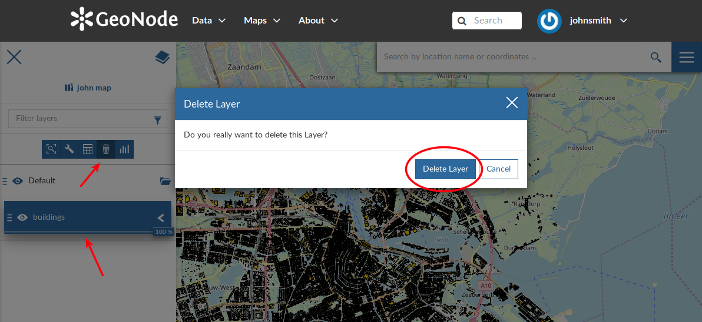

Table of Contents (TOC)¶
In the upper left corner, click on to open the Table Of Contents, briefly TOC from now on, of the map. The TOC shows all the layers involved with the Map and allows to manage their properties and representations on the map.
{kind=link}
{kind=link}
The Table Of Contents (TOC)
From the TOC you can:
- manage the layers Overlap;
- filter the layers list by typing text in the Filter Layers field;
- add new layers from the Catalog by clicking the Add Layer button;
- manage the layers properties such as Opacity (scroll the opacity cursor), Visibility (click on
 to make the layer not visible, click on
to make the layer not visible, click on  to show it on map);
to show it on map); - manage the Layer Settings, see the next paragraph.
{kind=link}
Scrolling the Layer Opacity
Select a Layer from the list and click on it, the Layer Toolbar should appear in the TOC.
{kind=link}
The Layer Toolbar
The Toolbar shows you many buttons:
 allows you to zoom to the layer extent;
allows you to zoom to the layer extent; drives you through the layer settings customization (see the next paragraph);
drives you through the layer settings customization (see the next paragraph); to explore the features of the layer and their attributes (more information at Attributes Table);
to explore the features of the layer and their attributes (more information at Attributes Table);to delete layers (click on Delete Layer to confirm your choice);
Deleting Layers
 to create Widgets (see Creating Widgets).
to create Widgets (see Creating Widgets).
{kind=link}
Managing Layer Settings¶
The Layer Settings panel looks like the one below.
{kind=link}
The Layer Settings Panel
The Layer Settings are divided in three groups:
- General settings
- Display settings
- Style settings
In the General tab of the Settings Panel you can customize the layer Title, insert a Description and change/create the Layer Group.
Click on the Display tab to see what are the layer appearance properties you can configure.
{kind=link}
The Layer Display Settings Panel
The third tab is the Style one. By clicking on it, an advanced Style Editor allows you to create new styles and to modify or delete an existing one. See the Layer Styling section to read more.